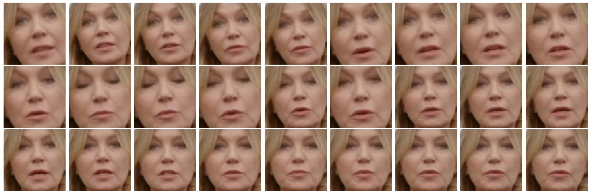
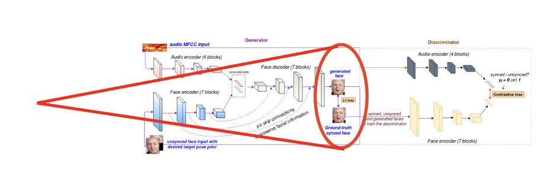
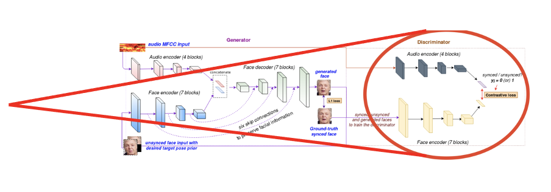

Final Report (presentation slides) (PDF)
Introduction
This technique is broadly applicable to many scenarios such as realistic dubbing in the movie industry, conversational agents, virtual anchors, and gaming. Providing a natural lip movement and facial expression generation improves the user’s experience in these applications.
Despite the recent advances and its wide applicability, synthesizing a clear, accurate, and human-like performanceis still a challenging task. We are exploring the limitations of the state-of-the-art techniques and propose possible solutions.
Motivation and previous work
Dataset and Preprocessing
Dataset Description
The LRS2 dataset [2] consists of thousands of spoken sentences from BBC television. Each sentences is up to 100characters in length. The training, validation, and test sets are divided according to broadcast date. The train set contains45,839 utterances with 329,180 words instances and 17,660 vocab size.Preprocessing
We extracted the frames at 25fps usingopencvand trimmed the face coordinates of the speaker. We useddlibget_frontal_face_detectorto detect the speaker face from the video frames. Each detected face is resized to96×96. The LipGan requires that audio files are in the form of a Mel-frquency cepstrum features (MFCCs) so weconverted the audio files using the pythonaudiolibrary to match this format. Pre-processed outputs for a video is shown in below figure. State-of-the-art Model Implementation
Model architecture overview: Generator network
Face Encoder
This CNN module encodes the face features, including identity and pose.Audio Encoder:
The audio encoder is a standard CNN model that takes a Mel-frequency cepstral coefficient(MFCC) heatmap and creates an audio embeddingFace Decoder
This module synthesizes a lip-synchronized face from the joint audio-visual embedding byinpainting the masked region of the input image with an appropriate mouth shape.Discriminator network
Contrastive loss between the encoded audio and encoded face is used to supervise the generator module to learn robust,accurate phoneme-viseme mappings to produce satisfactory talking faces with more natural facial movements.Experiments
Weighted L1 reconstruction loss
- Idea: Lip reason contributes to less than 4% of the total reconstruction loss. Can we improve by focusing on the lip region.
- We observed that Lip region contributes to only 4% of total face ares i.e. the reconstruction loss. We hypothesize that we can use weighted loss to have extra supervision around lip region.
- Early epochs vs late epochs reconstruction loss: Without weighted loss, the network starts to morph the lip region only at around half way through training process (roughly 10 epoch). Using weighted loss, even the earlier epochs start focusing on the lip region. But after 15 epochs or so, both models achieve similar L1 reconstruction loss (MAE).
- One justification could be that we are passing the target pose prior (which is the face frame with masked lip region), Generative model learns to copy the non-lip face region anyways (be it in inital epochs or later epochs). Eventually focusing on lip region is redundant after midway through the training process, as both model versions will start focusing on the difficult part (morphing the lip region) than easy part (copy the non-lip region from target pose prior).
Discriminator Network: Need for an expert discriminator
- Idea: In the literature, researchers have tried using an additional expert lip sync discriminator. Note this expert discriminator is pre-trained and not updated during the training process. So, we wanted to establish the rationale behind how having an expert discriminator helps.
- We evaluated our dicriminator model (learned as a part of GAN framework), and found that it is indeed not a good discriminator and have just around 63% accuracy on 1000 randomly generated lip sync face images.
- The discriminator trained as a part of GAN framework is weak given the presenece of lot of artifacts due to large scale and pose variations. So, having an additional expert pre-trained discriminator provides better supervision to the generator network.
- We wanted to try out multiple discriminators (one for visual quality, and one for lip sync) in a multi-task learning setting, but could not experiment given the resource limitation. (Implementational challenges discussed later)
Limitations
Difficult to quantitatively measure shortcomings
One of the biggest challenges that we faced was that it was hard to have a quantitative measure of the model’s performance which could substitute human qualitative evaluation. Most of the quantitative measures has its limitations, and we need to depend on human evaluation. For example, landmark distance which is defines as the sum of pointwise movement of lip keypoints over a time period. The lower the better: This can be satisfied by just reducing the lip movement globally (as in mumbling lip movement) . Similarly, other structural measure like SSIM (Structural SIMilarity Index) and PSNR (Peak signal-to-noise ratio) were designed to evaluate the overall image quality and not fine grained lip sync error.Spurious lip region detection
We have noticed that lip-sync generation has spurious movements on non-lip region, like lower chin or side chin as shown below (right video). We have observed this when the face detection module fails to correctly localize the lip region. Profile view of the detected face usually faces this limitation. We are using dlib facial keypoints detector.Profile face overcompensation/skewed lip sync
Profile view of the detected face usually suffers from skewed lip movements i.e One side of lip has more movement than the other side.Teeth Region Deformation: crooked teeth OR no teeth at all
We observed that the LipGAN model generates image frames which smoothed out teeth and lip region. Lower teeth is merged with upper lip and smoothed out. In many cases, generated face images have crooked teeth, leading to very random/ discontinuous teeth contour.Limitations due to facial expression
We also noticed that the model performs worse on faces with certain facial expressions, for example person in deep frown.Issues with lip movement and audio synchronization
Especially, background music leads to high murmuring lip movement. We usually don’t remove noise while using MFCC or Spectrogram heat maps, as usually learnt CNN filters should take care of that. But when we have background music (not noise) and music has a proper frequency representation, it becomes difficult for CNN models to distinguish music and speaker voice. Alternatively, we can remove noise during preprocessing step, but removing background music may require additional effort.Implementation Challenges
We faced many implementational challenges- mostly due to the large dataset size and huge model trainable parameters.- LRS2 dataset acquisition and pre-processing tasks were not easy given the huge size (roughly 50GB). Thepre-processed files were not readily available for use because of the signed Data Sharing agreement with BBC Research & Development. After several attempts, we were able to download the part files and save itto shared Google Drive. Now, we can mount the shared drive on Google Colab VM.
- Another implementational challenge has to do with the limitations of Google Colab including running session timeouts and disk quota constraints. Even having a google colab PRO subscription, it closes the job after a certain time (not fixed, usually 24ish hour). We had to be cautious not to exhaust google drive disk quota or File read-write operations. We trained our model on Google Colab.
- Although the original model described in the LipGAN paper utilizes MATLAB and was the one most extensively researched, due to issues working with the MATLAB implementation and our preference for using Python, we are using Python to implement the model. We had to resolve multiple python packages dependencies issues to have a working setup on GoogleColab.
Discussion
We tried out the LipGAN model for cartoon characters too. It works reasonably well with animated cartoon as well. We can create lip-synced bitmoji or AR emoji using LipGAN.
Future Work
- Need more detailed keypoint detector for lip region: Having more keypoints in lip region will help the model to create a more precise boundary between lips, teeth, side chin, etc. It will help in better supervision in reconstruction loss or discriminator network.
- Worth trying out 3D representation of face, with mesh-like grid to have more structured and smooth lip movement along with side cheeks, jawline etc. (muscles getting pulled/pushed/squeezed). It will also enforce a sense of depth measure.
- Million dollar idea: Live lip-syncing in video call, say zoom call (even if speaker is not sharing his video feed, we just need one static face image). By doing so, we can have both live lip-synced video and privacy. Many psychological research have concluded that live video feed have better engagement. So we can use LipGAN generated anonymous/avatar video feed or using the static face image.
- Lip-synced dubbed movies/Tv series: I lip-synced 10 min of “Money Heist” (dubbed from Spanish to English) and I definitely liked watching the lip-synced version!
Privacy Matters!
Project Presentation Video
Some additional Result samples
PDF Reports
REFERENCES
- [1] Prajwal KR, Rudrabha Mukhopadhyay, Jerin Philip, Abhishek Jha, Vinay Namboodiri, and CV Jawahar. Towards automatic face-to-face translation. In Proceedings of the 27th ACM International Conference on Multimedia, pages 1428–1436, 2019
- [2] Triantafyllos Afouras, Joon Son Chung, Andrew Senior, Oriol Vinyals, and Andrew Zisserman. Deep audio-visualspeech recognition. IEEE transactions on pattern analysis and machine intelligence, 2018.
- [3] Lele Chen, Zhiheng Li, Ross K Maddox, Zhiyao Duan, and Chenliang Xu. Lip movements generation at a glance. In Proceedings of the European Conference on Computer Vision (ECCV), pages 520–535, 2018.
- [4] Joon Son Chung and Andrew Zisserman. Out of time: automated lip sync in the wild. In Asian conference oncomputer vision, pages 251–263. Springer, 2016.
- [5] Lip reading sentences in the wild agreement (lrs2) document.https://www.bbc.co.uk/rd/projects/lip-reading-datasets.
- [6] The oxford-bbc lip reading sentences 2 (lrs2) dataset.https://www.robots.ox.ac.uk/~vgg/data/lip_reading/lrs2.html.
- [7] Google colaboratory.https://colab.research.google.com/.
- [8] https://github.com/Rudrabha/LipGAN/tree/fully_pythonic
- [9] Prajwal, K.R., Mukhopadhyay, R., Namboodiri, V.P. and Jawahar, C.V., 2020, October. A lip sync expert is all you need for speech to lip generation in the wild. In Proceedings of the 28th ACM International Conference on Multimedia (pp. 484-492).
- [10] Masood, Momina, Marriam Nawaz, Khalid Mahmood Malik, Ali Javed, and Aun Irtaza. "Deepfakes Generation and Detection: State-of-the-art, open challenges, countermeasures, and way forward." arXiv preprint arXiv:2103.00484 (2021).
- [11] Prajwal, K.R., Mukhopadhyay, R., Namboodiri, V.P. and Jawahar, C.V., 2020. Learning individual speaking styles for accurate lip to speech synthesis. In Proceedings of the IEEE/CVF Conference on Computer Vision and Pattern Recognition (pp. 13796-13805).
- [12] Chung, J.S., Jamaludin, A. and Zisserman, A., 2017. You said that?. arXiv preprint arXiv:1705.02966.